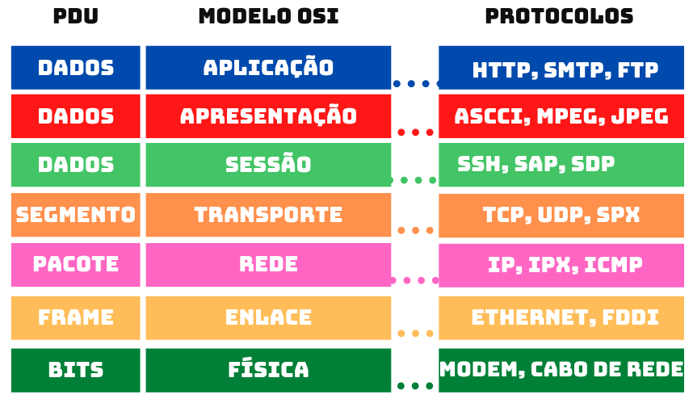
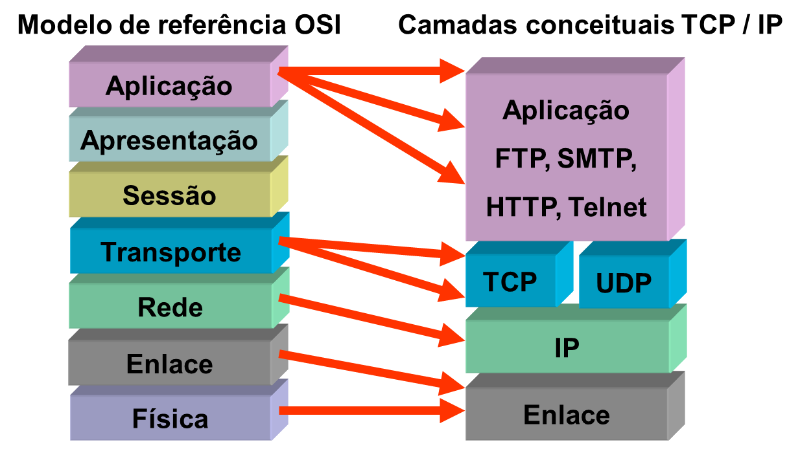
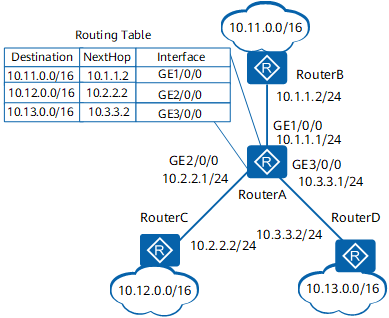

Redes e Comunicação de Dados
Fundamentos de comunicação de dados
É o estudo da troca de informações entre sistemas computacionais. Serve para transmitir dados de forma confiável e eficiente. Utiliza métodos como modulação, codificação e protocolos de transmissão.
Elementos de interconexão de redes de computadores
- Firewalls: Dispositivos de segurança que controlam o tráfego de rede entre redes internas e externas, filtrando dados com base em regras definidas.
- Switches: Dispositivos que conectam computadores em uma rede local (LAN), encaminhando pacotes para o destino correto.
- Roteadores: Dispositivos que interligam redes distintas e determinam a melhor rota para o tráfego de dados entre elas.
Tecnologias de roteamento: Switches Multilayer e Roteadores
Switches multilayer são switches que operam em múltiplas camadas (2 e 3) do modelo OSI, permitindo decisões de roteamento. Roteadores são dispositivos que determinam o caminho de pacotes entre redes.

Protocolos de roteamento e soluções para problemas (OSPF e BGP)
- OSPF (Open Shortest Path First): Protocolo de roteamento interno que determina a rota mais curta dentro de uma rede.
- BGP (Border Gateway Protocol): Protocolo de roteamento externo utilizado para troca de informações entre sistemas autônomos na internet.
Tipos e Tecnologias de redes locais e de longa distância
- Ethernet: Tecnologia para redes locais (LAN) que permite alta velocidade de comunicação.
- MPLS (Multiprotocol Label Switching): Tecnologia usada para direcionar dados entre diferentes locais em redes de longa distância (WAN).
QoS e segurança em ambiente LAN e WAN
QoS (Quality of Service) é a capacidade de garantir desempenho de rede, priorizando determinados tipos de tráfego. Segurança em LAN e WAN envolve medidas para proteger dados e evitar ataques.
Sistemas autônomos (ASN)
Um sistema autônomo (AS) é um conjunto de redes sob uma única administração que compartilha políticas de roteamento comum. Cada AS é identificado por um ASN (Autonomous System Number).
Arquitetura e protocolos da família TCP/IP
- Funcionalidades das camadas da arquitetura TCP/IP: Dividida em quatro camadas (Aplicação, Transporte, Internet, e Enlace), cada uma com funções específicas.

- Análise de tabelas de rotas: Verificar rotas possíveis para pacotes de dados.
Uma tabela de roteamento é um registro dentro de cada roteador.

Ela informa qual caminho um pacote deve seguir para cada rede de destino.
Cada tabela contém uma lista de destinos com prefixos de endereços IP para os quais o pacote pode ser encaminhado.
Quando um pacote chega a um roteador, o roteador lê o cabeçalho para ver para qual endereço IP o pacote está sendo enviado.
Em seguida, ele verifica esse endereço IP em sua lista de destinos e, por fim, determina a melhor rota para o pacote seguir.
- Subredes e superredes: Dividir redes maiores em menores (subredes) ou unir redes menores em maiores (superredes).
O protocolo IPv4 utiliza endereços de 32 bits, à medida que as várias redes IPv4 foram interligadas (formando a "internet")
começou um grave problema porque todos os endereços tinham de ser únicos. O espaço de endereçamento começou a não ser suficiente.
As regras de endereçamento que dividem as redes em classes eram restritivas,
levando ao "desperdicio" de muitos endereços, pois o aproveitamento de cada rede apenas se verifica para um número exacto de nós,
que raramente corresponde às situações concretas.
Para resolver este problema foi desenvolvido o IPv6, com endereços de 128 bits.
- Controle de erro e fluxo do TCP: Utiliza reconhecimento e janela deslizante para assegurar a entrega dos pacotes.
- Portas de comunicação da camada de transporte: Identificadores numéricos que permitem conexões específicas entre dispositivos.
- Interface de sockets: Conjunto de funções usadas para comunicação de rede.
- Endereçamento IP (IPv4 e IPv6): Identificação de dispositivos em redes usando endereços numéricos.
Protocolos da Família TCP/IP
Os protocolos da família TCP/IP são um conjunto de regras de comunicação usados para interligar dispositivos em uma rede e garantir a troca de dados de forma eficiente e segura. Vamos entender cada um dos principais aspectos do TCP/IP.
O que são?
TCP/IP (Transmission Control Protocol/Internet Protocol) é um conjunto de protocolos que permite a comunicação entre dispositivos na Internet e em redes locais. Eles definem como os dados devem ser divididos, endereçados, transmitidos, roteados e recebidos para que a comunicação ocorra corretamente entre diferentes dispositivos.
Para que servem?
Os protocolos da família TCP/IP servem para possibilitar a troca de informações em redes de computadores, desde uma simples rede local até a grande escala da Internet. Eles garantem que dados como páginas da web, e-mails e arquivos sejam transmitidos corretamente entre máquinas, independentemente das diferenças de hardware ou software.
Como funcionam?
O modelo TCP/IP é dividido em camadas, onde cada uma tem uma função específica no processo de comunicação. As principais camadas do modelo TCP/IP são:
1. Camada de Aplicação
É onde os protocolos de alto nível operam, permitindo que aplicações (como navegadores e clientes de e-mail) interajam com a rede. Exemplos de protocolos desta camada incluem HTTP, SMTP, FTP, entre outros.
2. Camada de Transporte
Responsável por garantir a entrega dos dados entre as máquinas. Nesta camada, dois dos principais protocolos são:
- TCP (Transmission Control Protocol): Garante que os pacotes sejam entregues corretamente, oferecendo um serviço confiável e orientado à conexão. Utiliza técnicas como controle de erro e confirmação de recebimento.
- UDP (User Datagram Protocol): Oferece um serviço não confiável, sem controle de conexão, mas com baixa latência, sendo útil para transmissões em tempo real.
3. Camada de Rede (ou Internet)
Define como os pacotes são roteados entre as redes. O principal protocolo desta camada é o IP (Internet Protocol), responsável por endereçar e encaminhar pacotes de dados. Existem duas versões principais do IP:
- IPv4: Utiliza endereços de 32 bits e é a versão mais utilizada.
- IPv6: Utiliza endereços de 128 bits e foi criado para resolver a limitação de endereços do IPv4.
4. Camada de Enlace (ou Link de Dados)
Lida com a interface física e o transporte dos dados dentro de uma rede local, garantindo que os pacotes possam ser transmitidos entre diferentes dispositivos na mesma rede.
Funcionalidades Importantes
- Controle de Erro e Fluxo: Protocolos como o TCP utilizam técnicas de reconhecimento (ACK) e janela deslizante para garantir que os dados cheguem sem erros e na ordem correta.
- Endereçamento: Cada dispositivo na rede tem um endereço IP único, permitindo que os dados sejam enviados ao destino correto.
- Sockets e Portas: Utilizados para identificar de maneira única cada serviço em um dispositivo. Sockets combinam endereço IP e número de porta para definir a comunicação.
Em resumo, os protocolos TCP/IP formam a base da comunicação em redes de computadores, definindo como os dados são transmitidos, endereçados e garantidos de forma segura e eficiente. Eles são fundamentais para o funcionamento da Internet e a maioria das redes locais.
Serviços de redes de comunicação
Incluem DNS, DHCP, FTP, HTTP, que facilitam a comunicação e acesso a recursos na internet.
Conceitos básicos de funcionamento, segurança, tecnologias e protocolos de redes sem fio
Redes sem fio permitem comunicação sem cabos, usando padrões como 802.11. Tecnologias de segurança incluem WEP, WPA, WPA2 para proteger conexões.
Padrões e protocolos da família 802.1x, EAP, WEP, WPA e WPA2
- 802.1x: Protocolo para controle de acesso a redes.
- EAP (Extensible Authentication Protocol): Protocolo de autenticação.
- WEP, WPA, WPA2: Tecnologias de criptografia para proteger redes sem fio.
Componentes do perímetro de segurança
- Firewall Stateless: Filtra pacotes com base em regras predefinidas, sem rastrear o estado da conexão.
- Firewall Stateful: Monitora o estado das conexões para decisões de filtragem.
- Firewall Proxy: Atua como intermediário para solicitações de rede.
- IDS/IPS: Sistemas de detecção e prevenção de intrusões.
- Gateway VPN: Facilita conexões seguras entre redes através de túneis criptografados.
Redes SAN (Storage Area Network)
Redes dedicadas para armazenamento de dados, usadas para conectar servidores a dispositivos de armazenamento.
Switches e directors fiberchannel
Dispositivos para conectar componentes em uma SAN. ISL (Inter Switch Link) é um link que conecta switches fiberchannel.
Especificação de zoneamento (zoning)
Técnica em SANs para controlar o acesso entre dispositivos, criando grupos (zonas) de comunicação.
Conceitos e aplicações de VPN
- Host-To-Gateway e Gateway-To-Gateway: Tipos de VPN para conexões seguras de dispositivos a redes ou entre redes.
- Protocolos: IPSec (ISAKMP, AH, ESP), PPTP, L2TP são protocolos usados para garantir segurança em VPNs.
Ferramentas de gerenciamento de rede (SNMP, RMON)
- SNMPv1, v2, v3: Protocolos para monitorar e gerenciar dispositivos de rede.
- RMON: Extensão do SNMP para coletar dados detalhados de redes.
Técnicas para coleta e processamento de informações de gerenciamento
Envolvem o uso de SNMP para obter dados sobre o desempenho da rede, falhas e segurança.
Técnicas para gerência de falhas, desempenho, configuração e segurança
Processos que garantem o funcionamento contínuo da rede, monitorando problemas e ajustando a configuração para manter o desempenho.
Meios físicos de transmissão e cabeamento estruturado
Cabeamento estruturado é um sistema de cabeamento padronizado que oferece uma infraestrutura de comunicação flexível, utilizada para conectar vários dispositivos e suportar diferentes tecnologias de rede (telefonia, internet, etc.). Serve para simplificar a instalação, manutenção e possíveis expansões.
Cabeamento de cobre
- Cat 5e: Suporta até 1 Gbps e é usado para redes Ethernet comuns.
- Cat 6: Suporta até 10 Gbps em distâncias curtas, com maior proteção contra interferências.
- Cat 6a: Similar ao Cat 6, mas com menos interferência e alcance estendido para transmissões de até 10 Gbps.
Fibra ótica
- Monomodo: Possui um núcleo menor que permite a propagação de um único modo de luz, ideal para transmissões de longa distância com altas velocidades.
- Multimodo: Tem um núcleo maior que permite a propagação de múltiplos modos de luz, utilizado em conexões de curta distância, como em ambientes corporativos.